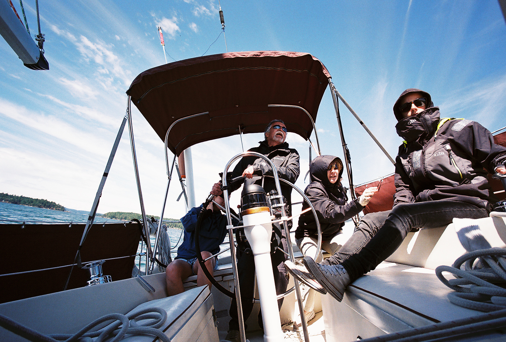
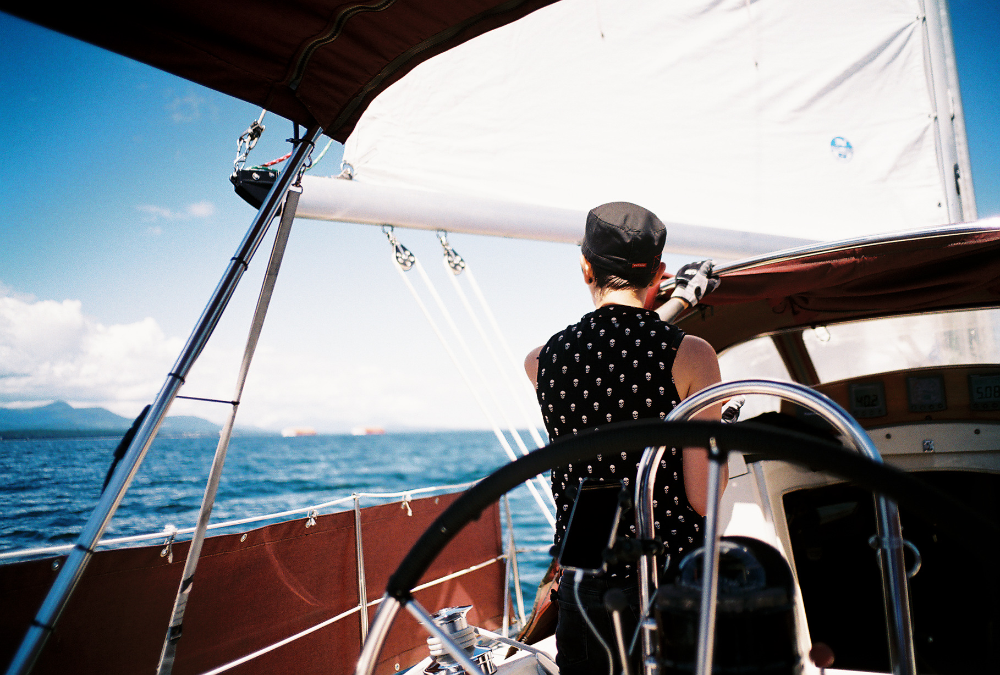
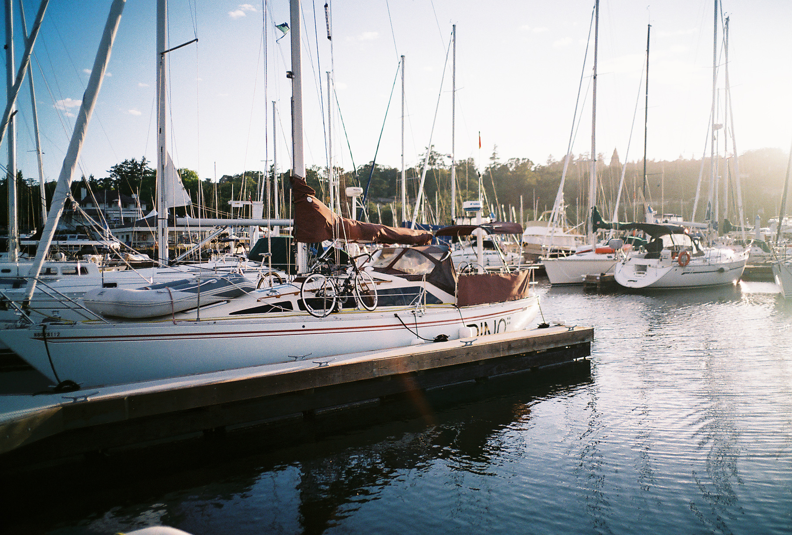

Hiding from the rain - 18E06
film
Color Film photography diary of the life aboard Pino.
This album will be periodically updated with shots taken with the 250 Jaher Voigtländer.
A black and white album is also maintained.
Hiding from the rain

Wandering in the North Island

Guerilla Gardening

Auckland

Auckland Beach

Whangarei Bridge

San Francisco Street

San Francisco Stairs

Pino's Helm
My Father At The Helm

Early Sailing Days
Early Sailing Days

Evening near Vancouver Island

Old Camera Gear

Meeting With Alaska Friends
Pino Docked